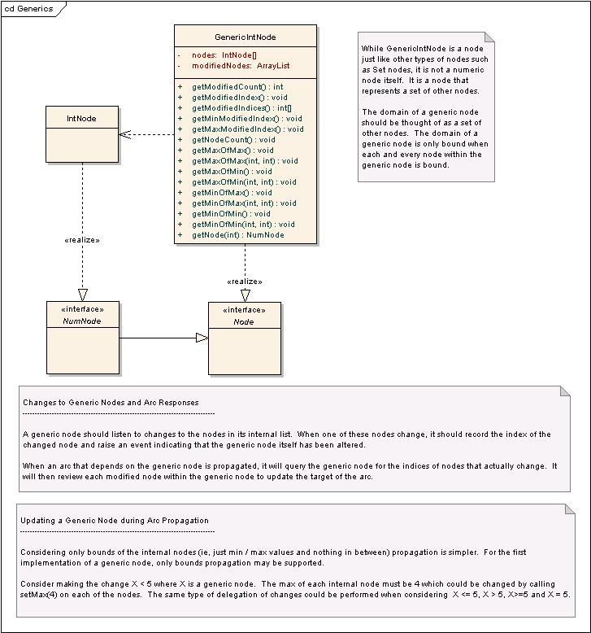

Generic Constraints and VariablesA generic variable is a wrapper class that represents a set of other variables. In this way a single constraint can be created that applies to all the other variables.Why do this you might ask? Well, the number of constraints that are necessary to define a problem are reduced to a single constraint. The reduces memory overhead, makes modelling of problems simpler and has performance implications. For example, lets say we had variables A, B, C and Y with the following constraints: A < Y B < Y C < Y
X < Y where X represented the variables A, B, and C. The implications of one constraint versus three are even more dramatic when the affects are considered on nodes and arcs for the CSP solver. Each constraint generates 2 arcs: 1) A < Y 2) Y > A 3) B < Y 4) Y > B 5) C < Y 6) Y > C vs 1) X < Y 2) Y > X this means the generalized constraint creates only 2 arcs vs the 6 arcs created by the independant constraints. This will greatly improve solver performance since the number of arcs that need to be visited in a problem can be significantly reduced. Node and Arc ObjectsNodes and arcs are created as a result of building expressions from variables and defining constraints. As nodes change, arcs depending on the node are evaluated causing other nodes to change. In this way, changes from one node are propagated to all other dependant nodes. The following diagram displays the sequence of events that occurs when the value of a node is changed.
The following listing is from the BinaryNumDiffArc class. The BinaryNumDiffArc is used to ensure that a node Z is always consistent with some equation such as Z = X - y, Z < x - Y, Z > X - y, etc. (where uppercase is a variable and lowercase is a constant). This arc can only handle one target node (Z), one source node (X or Y) and one constant value (x or y). The propogateBounds method is called when the source node (X or Y) changes. The code attempts to determine the new minimum and maximum values for Z and then, based on the type of arc (<, >, =, etc), update Z accordingly. /**
* Attempts to reduce values in target node domain based on Min / Max values
* in source node(s)
*
* @throws PropagationFailureException If domain of target node becomes empty
*/
public void propagateBounds() throws PropagationFailureException {
Number xmin = xconst;
Number xmax = xconst;
Number ymin = yconst;
Number ymax = yconst;
if (x != null) {
xmin = x.getMin();
xmax = x.getMax();
}
else {
ymin = y.getMin();
ymax = y.getMax();
}
switch(arcType) {
case GEQ:
z.setMin(NodeMath.subtractNoNull(xmin, ymax, nodeType));
break;
case GT:
z.setMin(NumSequence.next(NodeMath.subtractNoNull(xmin, ymax, nodeType)));
break;
case LEQ:
z.setMax(NodeMath.subtractNoNull(xmax, ymin, nodeType));
break;
case LT:
z.setMax(NumSequence.previous(NodeMath.subtractNoNull(xmax, ymin, nodeType)));
break;
case EQ:
z.setRange(NodeMath.subtractNoNull(xmin, ymax, nodeType),
NodeMath.subtractNoNull(xmax, ymin, nodeType));
break;
case NEQ:
if (x.isBound() && y.isBound())
z.removeValue(NodeMath.subtractNoNull(xmin, ymin, nodeType));
}
}
The BinaryNumDiffArc is designed to work with any node that implements the NumNode interface so it performs its calculations using generic Number objects and math utilities rather than straight integer may.
In our example, the Z node is an IntNode which converts the Number values to int values internally and performs the necessary updates to the domain. If the domain of Z is reduced at all, an event is raised notifying the solving algorithm that all arcs dependant on the node Z must be propagated again.
GenericsNow that we have seen how standard variables, constraints, nodes and arcs operate. How can we extend this to incorporate the generalize concept?Well to begin with, lets limit our discussion to integer types to reduce confusion for the moment. If we created a variable called GenericIntVariable that was initialized with an array of AcIntVariables, the generic variable should implement the AcIntExpr interface to allow it to be used in any integer expression just as any other AcIntVariable. This would also mean that existing constraints should support the GenericIntVariable just like any other variable. This design will be consistent with the original concept that the generic variable can be used in place of standard variables at any point in the modelling of a problem. Now comes the issue of implementing generic arcs and nodes. A generic node does not have a domain of values that can be enumerated like an int node, it is really just a placeholder for other nodes. The node itself only collects information about the internal nodes that changed, but does not really have a value of its own. Consider the following diagram:  click to enlarge Notice that a change such as setMax(15) on a generic will apply to all nodes within the generic. This is simple to code since one could simply loop over all the internal code and update the values with a convience function on the generic node. This makes a generic node very simple to use when it is the target of an arc, but it becomes more complex when it is the source of an arc. Consider the following:
A: {7, 8, 9}
B: {10, 11, 12}
Y: {5}
X is a generic of A and B
X > Y is true
Notice that A and B have no values in common, but they are both consistent with the constraint. This is important since it shows that X cannot simply be represented by the intersection of all the values in A and B. Now consider this
A: {1, 2, 3, 4}
B: {3, 4, 5, 6}
Y: {5}
X is a generic of A and B
X > Y is false
The statement is false because no value in A is greater than 5. This example is also important since it shows that X cannot simply be represented by the union of all the values in A and B. So now what? We can't easily represent the values in X so we need to evaluate the individual nodes in X when a generic arc is propagated. For efficiency, the generic arc should track the indices of the nodes that actually change so these are the only ones checked, but that is about all it can do. We still need to go to the specific node to do the work. public void propagateBounds() throws PropagationFailureException {
Node src = (x != null) ? x : y;
However, this pattern would be so repetitious. It would be nice if it could be moved up into a more abstract base class like BinaryArc. |
{kind=link}
{kind=link}
{kind=link}